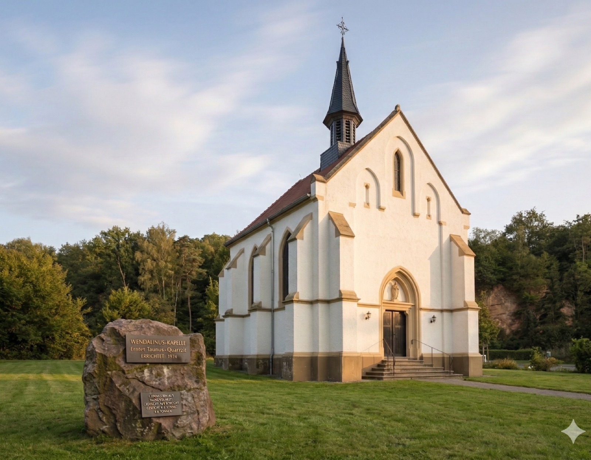

Ein bedeutsames Zeugnis der Verbindung von saarländischer Industriekultur, hugenottischer Tradition und bürgerschaftlichem Engagement.

Die Wendalinuskapelle ist ein unvollendetes spätgotisches Meisterwerk aus rotem Sandstein und prägt seit über einem Jahrhundert das Ortsbild von Ludweiler. Als Fragment des einst geplanten größeren Kirchenbaus steht sie bis heute als Ort der Stille inmitten der Gemeinde — getragen von bürgerschaftlichem Engagement und lebendig gehalten durch Konzerte, Lesungen und Begegnungen.
Auf einen Blick
- Erbaut
- 1896–1897, spätgotischer Chorbau aus rotem Sandstein
- Namenspatron
- Heiliger Wendalinus, Schutzpatron der Bergleute und Hirten
- Status
- Stehend unter Denkmalschutz
- Träger
- Patengemeinschaft Wendalinuskapelle Ludweiler e.V.